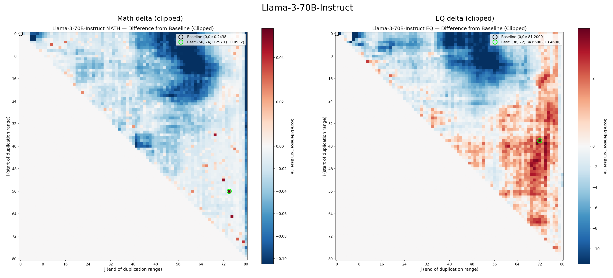
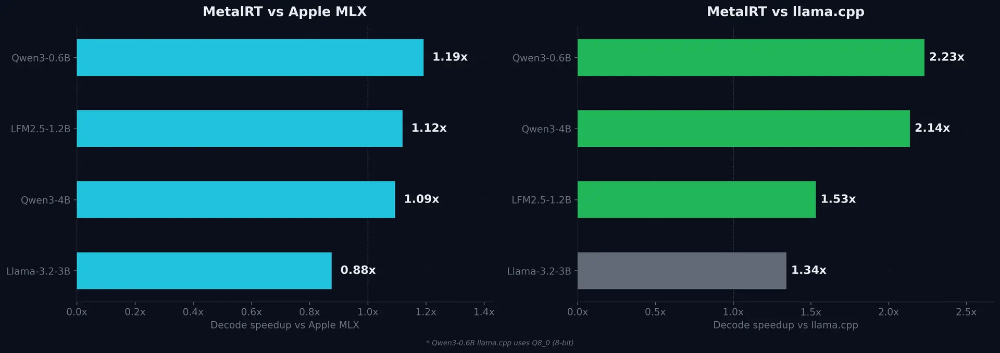

THE FRONT PAGE
EDITOR'S NOTE: As we pivot from the hallucinated grace of tokens toward the expensive friction of world models, one wonders if we are finally building a foundation or simply digging a deeper hole with more efficient shovels. #The desperate migration from probabilistic 'vibes' toward verifiable structural engineering.
By funding a departure from the stochastic mimicry of LLMs, this capital bets that true intelligence requires internalizing physical constants—a necessary pivot as the industry's reliance on 'more data' hits diminishing returns.
A Stanford team claims to have engineered a nanoparticle-based vaccine that trains the immune system to recognize a broad spectrum of respiratory pathogens and allergens by targeting shared epithelial cell receptors. Early murine trials show cross-protection, but the approach risks overstimulating mucosal immunity—a gamble in an era where autoimmune side effects already erode public trust in novel biologics.
A new model release quietly normalizes always-on agents—capable of executing tasks during human downtime—but raises unanswered questions about failure modes in unsupervised operation. The move feels less like progress and more like surrender to the inevitability of machines filling the gaps in our attention spans.
The latest release of pgAdmin introduces a dedicated panel for natural language queries, trading human SQL fluency for immediate but potentially halluncinated query structures. It signals a shift where the database tool no longer just manages state, but actively suggests it, further abstracting the distance between the engineer and the raw relational model.
By treating remote FFmpeg instances as local devices, this implementation simplifies distributed media processing but introduces a fragile dependency on network jitter that local buffers can't always mask. It is a pragmatic solution for compute-heavy transcoding that further decouples the engineer from the hardware actually doing the work.

An independent developer leveraged consumer-grade hardware and what appears to be aggressive quantization tricks to briefly displace Meta and Mistral on HuggingFace’s open LLM rankings—raising questions about whether benchmark gaming is now a viable path to model supremacy, or just another optimization mirage. The tradeoff? Stability under production loads remains untested.

A Y Combinator Winter ‘26 batch startup, RunAnywhere, is shipping a CLI tool that sidesteps Apple’s Metal framework entirely, instead using ARM NEON and Accelerate for LLaMA-class models—delivering benchmarks that embarrass llama.cpp while raising questions about long-term compatibility with Cupertino’s ecosystem lock-in. The tradeoff? No GPU fallback, and a bet that Apple won’t break their low-level optimizations in future silicon revisions.
MODEL RELEASE HISTORY
No confirmed model releases were detected for this edition date.